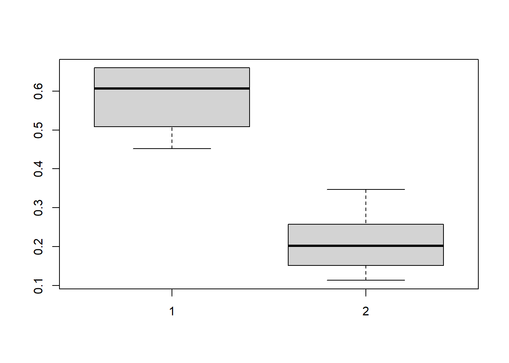
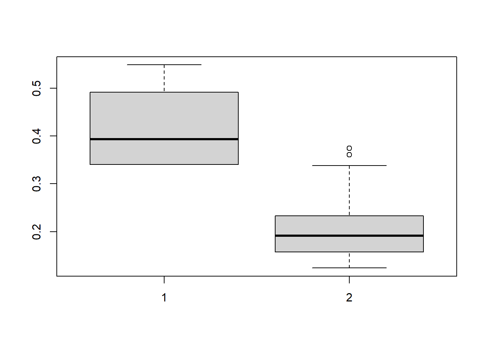

Chapter 5 Estimate the CDE using the ltmle package
The ltmle package can be used to estimate controlled direct effects by:
- g-computation by iterative conditional expectation (ICE),
- IPTW,
- or TMLE.
5.1 G-computation by iterative conditional expectation
5.1.1 Algorithm and manual calculation
The following steps describe the implementation of the g-computation estimator by iterative conditional expectation (ICE) for the component \(\mathbb{E}(Y_{A=a^\prime,M=m})\) used in the definition of CDE \(\Psi^{\text{CDE}_m} = \mathbb{E}(Y_{A=1,M=m}) - \mathbb{E}(Y_{A=0,M=m})\). Interestingly, there is no need to estimate or simulate \(L(1)\) density with this method.
Fit a logistic or a linear regression of the final outcome, conditional on the exposure \(A\), the mediator \(M\) and all the parents of \(Y\) preceding \(M\), to estimate \(\overline{Q}_{L(2)} = \mathbb{E}(Y \mid L(0),A,L(1),M)\);
Use this estimate to predict an outcome for each subject \(\hat{\overline{Q}}_{L(2)}(A=a^\prime,M=m)_i\), by evaluating the regression fit \(\overline{Q}_{L(2)}\) at the chosen value for the exposure \(A=a^\prime\) and the mediator \(M=m\);
Fit a quasibinomial or a linear regression of the predicted values \(\hat{\overline{Q}}_{L(2)}(A=a^\prime,M=m)_i\) conditional on the exposure \(A\) and baseline confounders \(L(0)\) to estimate \(\overline{Q}_{L(1)} = \mathbb{E}\left(\hat{\overline{Q}}_{L(2)}(A=a^\prime,M=m) \middle| L(0),A\right)\);
Use this estimate to predict the outcome \(\hat{\overline{Q}}_{L(1)}(A=a^\prime)_i\) for each subject, by evaluating the regression fit \(\overline{Q}_{L(1)}\) at \(A=a^\prime\);
Use the sample mean to estimate \(\Psi^{\text{CDE}_m}_{\text{gcomp}}\) \[\begin{equation} \hat{\Psi}^{\text{CDE}_m}_{\text{gcomp}} = \frac{1}{n} \sum_{i=1}^n \left[ \hat{\overline{Q}}_{L(1)}(A=1)_i - \hat{\overline{Q}}_{L(1)}(A=0)_i \right] \end{equation}\]
Note that G-computation by iterative expectation is preferable if the set of intermediate confounders \(L(1)\) is high-dimensional as we only need to fit 2 models by counterfactual scenario (for a whole set of \(L(1)\) variables) in the procedure described below, whereas at least 1 model by \(L(1)\) variable and the model of the outcome are needed with parametric g-computation.
In the following example, we will focus on the estimand \(CDE(M=0) = \mathbb{E}(Y_{A=1,M=0}) - \mathbb{E}(Y_{A=0,M=0})\).
rm(list = ls())
df <- read.csv2("data/df.csv")
## 1) Regress the outcome on L0, A, L1 and M (and the A*M interaction if appropriate)
death_model <- glm(death ~ sex + low_par_edu + edu + phys + occupation +
smoking + edu:smoking,
family = "binomial", data = df)
score_model <- glm(score ~ sex + low_par_edu + edu + phys + occupation +
smoking + edu:smoking,
family = "gaussian", data = df)
## 2) Generate predicted values by evaluating the regression setting the exposure
## and the mediator at exposure history of interest:
## {A=1,M=0},{A=0,M=0}
data_Ais0_Mis0 <- data_Ais1_Mis0 <- df
data_Ais0_Mis0$edu <- 0
data_Ais0_Mis0$smoking <- 0
data_Ais1_Mis0$edu <- 1
data_Ais1_Mis0$smoking <- 0
Q_L2_death_A0M0 <- predict(death_model,
newdata = data_Ais0_Mis0, type="response")
Q_L2_death_A1M0 <- predict(death_model,
newdata = data_Ais1_Mis0, type="response")
Q_L2_score_A0M0 <- predict(score_model,
newdata = data_Ais0_Mis0, type="response")
Q_L2_score_A1M0 <- predict(score_model,
newdata = data_Ais1_Mis0, type="response")
## 3) Regress the predicted values conditional on the exposure A
## and baseline confounders L(0)
L1_death_A0M0_model <- glm(Q_L2_death_A0M0 ~ sex + low_par_edu + edu,
family = "quasibinomial", data = df)
L1_death_A1M0_model <- glm(Q_L2_death_A1M0 ~ sex + low_par_edu + edu,
family = "quasibinomial", data = df)
L1_score_A0M0_model <- glm(Q_L2_score_A0M0 ~ sex + low_par_edu + edu,
family = "gaussian", data = df)
L1_score_A1M0_model <- glm(Q_L2_score_A1M0 ~ sex + low_par_edu + edu,
family = "gaussian", data = df)
## 4) generate predicted values by evaluating the regression at exposure
## of interest: {A=1} & {A=0}
Q_L1_death_A0M0 <- predict(L1_death_A0M0_model,
newdata = data_Ais0_Mis0, type="response")
Q_L1_death_A1M0 <- predict(L1_death_A1M0_model,
newdata = data_Ais1_Mis0, type="response")
Q_L1_score_A0M0 <- predict(L1_score_A0M0_model,
newdata = data_Ais0_Mis0, type="response")
Q_L1_score_A1M0 <- predict(L1_score_A1M0_model,
newdata = data_Ais1_Mis0, type="response")
## 5) Take empirical mean of final predicted outcomes to estimate CDE
# CDE setting M=0
CDE_death_m0_gcomp_ice <- mean(Q_L1_death_A1M0) - mean(Q_L1_death_A0M0)
CDE_death_m0_gcomp_ice## [1] 0.07202748## [1] -12.04431Applying g-computation by iterative expectation, the CDE setting the mediator to 0 is +7.20% for death and -12.04 for the quantitative score.
95% confidence intervals can be estimated by bootstrap methods.
5.1.2 G-computation by ICE using the ltmle package
The ltmle package can be used to estimate Controlled Direct Effects by g-computation, as shown below.
library(ltmle)
rm(list = ls())
df <- read.csv2("data/df.csv")
# the data set should be composed of continuous or binary variables,
# ordered following the cause-effect sequence of each variables.
# Note that within a set of exposures or intermediate confounders measured at a
# single discrete time t, any causal sequence can be applied (for example,
# with several L1 variable, it can be {L1.1, L1.2, L1.3} or {L1.2,L1.3,L1.1},
# without any consequences on the estimation.
df_death <- subset(df, select = -c(X, subjid, score))
df_score <- subset(df, select = -c(X, subjid, death))
## 1) Define Q formulas (Qbar_L1 and Qbar_Y functions)
Q_formulas_death <- c(phys = "Q.kplus1 ~ sex + low_par_edu + edu",
death = "Q.kplus1 ~ sex + low_par_edu + phys + occupation +
edu * smoking") # add interaction
Q_formulas_score <- c(phys = "Q.kplus1 ~ sex + low_par_edu + edu",
score = "Q.kplus1 ~ sex + low_par_edu + phys + occupation +
edu * smoking") # add interaction
## 2) Define g formulas (needed for the ltmle package) but they are not used
## with the g-computation estimator
g_formulas <- c("edu ~ sex + low_par_edu",
"smoking ~ sex + low_par_edu + edu + phys + occupation")
## 3) Use the ltmle() function
# arguments:
# - Anodes: indicate the exposure and the mediator variables
# - Lnodes: indicate the intermediate confounders (+/- baseline confounders)
# - Cnodes: censoring nodes, useless in our example
# - Ynodes: outcome variable
# - survivalOutcome = FALSE in our example
# - abar: list of the two values used to define counterfactual outcomes
# for the contrast of interest. For example, setting M=0,
# CDE(M=0) = E(Y_{A=1,M=0}) - E(Y_{A=0,M=0})
# - rule: to define dynamic rules (useless in our example)
# - gbounds = c(0.01, 1) by default. This parameter is not used with g-computation
# - Yrange = NULL, can be used to define range (min,max) for continuous outcomes
# - SL.library = "glm", will apply main terms glm models.
# The argument can be used to specify SuperLearner libraries.
# However, simple glm models might be preferable as data.adaptive
# algorithms rely on cross-validation, which is difficult and long to
# implement with the bootstrap procedure needed for 95% confidence
# intervals
# - stratify = FALSE by default. If TRUE, glm estimations are stratified for
# each counterfactual scenario defined in abar.
# - estimate.time = FALSE. If TRUE, print a rough estimate of computation time
# - iptw.only = FALSE, useless with g-computation
# - variance.method = "ic", computation is faster than with "tmle" which
# is useless with g-comp: variance estimates rely on
# influence curves which cannot be used with g-comp because
# g-computation is not a asymptotically efficient estimator.
# - observation.weights = NULL, can be used to specify individual weights
# - id = subject identifiers, useful in case of clustered structure in the data
## With a binary outcome, CDE(M=1) = P(Y_{A=1,M=0} = 1) - P(Y_{A=0,M=0} = 1)
ltmle_gcomp_CDE_M0 <- ltmle(data = df_death,
Anodes = c("edu", "smoking"),
Lnodes = c("phys", "occupation"),
Ynodes = c("death"), # binary outcome
survivalOutcome = FALSE,
Qform = Q_formulas_death, # Q formulas
gform = g_formulas, # g formulas
abar = list(c(1,0),
c(0,0)), # EY_{A=1,M=0} vs EY_{A=0,M=0}
rule = NULL,
gbounds = c(0.01, 1), # truncation of g, by default
Yrange = NULL,
deterministic.g.function = NULL,
stratify = FALSE,
SL.library = "glm",
SL.cvControl = list(),
estimate.time = FALSE,
gcomp = TRUE, # should be TRUE for g-computation
iptw.only = FALSE,
deterministic.Q.function = NULL,
variance.method = "ic",
observation.weights = NULL,
id = NULL)
summary(ltmle_gcomp_CDE_M0)## Estimator: gcomp
## Warning: inference for gcomp is not accurate! It is based on TMLE influence curves.
## Call:
## ltmle(data = df_death, Anodes = c("edu", "smoking"), Lnodes = c("phys",
## "occupation"), Ynodes = c("death"), survivalOutcome = FALSE,
## Qform = Q_formulas_death, gform = g_formulas, abar = list(c(1,
## 0), c(0, 0)), rule = NULL, gbounds = c(0.01, 1), Yrange = NULL,
## deterministic.g.function = NULL, stratify = FALSE, SL.library = "glm",
## SL.cvControl = list(), estimate.time = FALSE, gcomp = TRUE,
## iptw.only = FALSE, deterministic.Q.function = NULL, variance.method = "ic",
## observation.weights = NULL, id = NULL)
##
## Treatment Estimate:
## Parameter Estimate: 0.15656
## Estimated Std Err: 0.0085093
## p-value: <2e-16
## 95% Conf Interval: (0.13988, 0.17324)
##
## Control Estimate:
## Parameter Estimate: 0.084535
## Estimated Std Err: 0.0063349
## p-value: <2e-16
## 95% Conf Interval: (0.072118, 0.096951)
##
## Additive Treatment Effect:
## Parameter Estimate: 0.072027
## Estimated Std Err: 0.010602
## p-value: 1.0947e-11
## 95% Conf Interval: (0.051247, 0.092808)
##
## Relative Risk:
## Parameter Estimate: 1.852
## Est Std Err log(RR): 0.092521
## p-value: 2.7185e-11
## 95% Conf Interval: (1.5449, 2.2203)
##
## Odds Ratio:
## Parameter Estimate: 2.0102
## Est Std Err log(OR): 0.10412
## p-value: 1.9986e-11
## 95% Conf Interval: (1.6391, 2.4653)## With a continuous outcome, CDE(M=1) = E(Y_{A=1,M=1}) - E(Y_{A=0,M=1})
ltmle_gcomp_CDE_M0 <- ltmle(data = df_score,
Anodes = c("edu", "smoking"),
Lnodes = c("phys", "occupation"),
Ynodes = c("score"), # continous outcome
survivalOutcome = FALSE,
Qform = Q_formulas_score, # Q formulas
gform = g_formulas, # g formulas
abar = list(c(1,0),
c(0,0)), # Y_{A=1,M=0} vs Y_{A=0,M=0}
rule = NULL,
gbounds = c(0.01, 1), # by default
Yrange = NULL,
deterministic.g.function = NULL,
stratify = FALSE,
SL.library = "glm",
SL.cvControl = list(),
estimate.time = FALSE,
gcomp = TRUE, # should be TRUE for g-computation
iptw.only = FALSE,
deterministic.Q.function = NULL,
variance.method = "ic",
observation.weights = NULL,
id = NULL)
summary(ltmle_gcomp_CDE_M0)## Estimator: gcomp
## Warning: inference for gcomp is not accurate! It is based on TMLE influence curves.
## Call:
## ltmle(data = df_score, Anodes = c("edu", "smoking"), Lnodes = c("phys",
## "occupation"), Ynodes = c("score"), survivalOutcome = FALSE,
## Qform = Q_formulas_score, gform = g_formulas, abar = list(c(1,
## 0), c(0, 0)), rule = NULL, gbounds = c(0.01, 1), Yrange = NULL,
## deterministic.g.function = NULL, stratify = FALSE, SL.library = "glm",
## SL.cvControl = list(), estimate.time = FALSE, gcomp = TRUE,
## iptw.only = FALSE, deterministic.Q.function = NULL, variance.method = "ic",
## observation.weights = NULL, id = NULL)
##
## Treatment Estimate:
## Parameter Estimate: 37.537
## Estimated Std Err: 0.35058
## p-value: <2e-16
## 95% Conf Interval: (36.849, 38.224)
##
## Control Estimate:
## Parameter Estimate: 49.669
## Estimated Std Err: 0.34282
## p-value: <2e-16
## 95% Conf Interval: (48.997, 50.341)
##
## Additive Treatment Effect:
## Parameter Estimate: -12.132
## Estimated Std Err: 0.48796
## p-value: <2e-16
## 95% Conf Interval: (-13.089, -11.176)# in order to apply quasibinomial regressions, ltmle automatically transformed
# the continuous outcome by Y_transformed = (Y - min(Y)) / range(Y)
# so that the range of Y_transformed is [0,1],
# Then, the results are back-transformed.
ltmle_gcomp_CDE_M0$transformOutcome## [1] TRUE
## attr(,"Yrange")
## [1] -49.40414 97.00414We can see that the results are exactly the same as the previous manual calculation by ICE for the binary outcome. It is slightly different for the continuous outcome (because we did not apply a quasibinomial model on the min-max transformation in the manual calculation).
5.2 IPTW estimator of the CDE
We can express the CDE using coefficients of an MSM, where the MSM’s coefficients are estimated by IPTW.
The controlled direct effect is defined as \(\text{CDE}_m= \mathbb{E}(Y_{am}) - \mathbb{E}(Y_{a^*m})\).
Using the following MSM \[\begin{equation} \mathbb{E}(Y_{am}) = \alpha_0 + \alpha_A a + \alpha_M m + \alpha_{A \ast M} a \times m \tag{5.1} \end{equation}\] the controlled direct effect (keeping the mediator constant to the value \(M=m\)) can be expressed using the coefficients of the MSM (5.1): \[\begin{align*} \text{CDE}_m &= (\alpha_0 + \alpha_A a + \alpha_M m + \alpha_{A \ast M} a \times m) - (\alpha_0 + \alpha_A a^* + \alpha_M m + \alpha_{A \ast M} a^* \times m) \\ \text{CDE}_m &= \alpha_A(a - a^* ) + \alpha_{A \ast M} \times (a - a^*) \times m \end{align*}\] For a binary exposure \(A\), we have \(\text{CDE}_m=\alpha_A + \alpha_{A \ast M} \times m\).
5.2.1 Estimation of the MSM coefficients by IPTW
MSM coefficients can be easily estimated using an Inverse Probability of Treatment (IPTW) approach based on weighted regressions.
In order to fit the MSM (5.1), we can use a linear regression of the (observed) outcome \(Y\) on the exposure and mediator, weighted by individual stabilized weights \(sw_i\) (VanderWeele 2009): \[\begin{equation} \mathbb{E}\left(Y \mid A,M\right) = \alpha_0 + \alpha_A a + \alpha_M m + \alpha_{A \ast M} a \times m \end{equation}\]
where \(sw_i\) is the product of two weights \(sw_i = sw_{A,i} \times sw_{M,i}\),
\(sw_{A,i}=\frac{P(A=a_i)}{P(A=a_i \mid L(0)=l(0)_i)}\) and \(sw_{M,i}=\frac{P(M=m_i \mid A=a_i)}{P(M = m_i \mid A=a_i,L(0)=l(0)_i, L(1)=l(1)_i)}\).
The “no-unmeasured confounding” assumption is addressed by the application of weights \(sw_i\), which balances confounders \(L(0)\) relative to the exposure-outcome \(A-Y\) relationship, and balance the set of confounders \(\{L(0),A,L(1)\}\) relative to the mediator-outcome \(M-Y\) relationship.
Below, we estimate the CDE by hand:
### MSM of CDE, estimated by IPTW
rm(list = ls())
df <- read.csv2("data/df.csv")
## 1. Stabilized weight for the exposure sw_{A,i}
# 1a. Estimate g(A=a_i|L(0)) (denominator of the weight)
g_A_L <- glm(edu ~ sex + low_par_edu,
family = "binomial", data = df)
# 1b. Predict each individual's probability of being exposed to her own exposure
# the predicted probability of the observed treatment g(A = a_i | L(0)) is :
gAi_L <- rep(NA, nrow(df))
gAi_L[df$edu == 1] <- predict(g_A_L, type="response")[df$edu == 1]
gAi_L[df$edu == 0] <- (1 - predict(g_A_L, type="response"))[df$edu == 0]
# 1c. Estimate g(A=a_i) (numerator of the weight)
g_A <- glm(edu ~ 1, family = "binomial", data = df)
# 1d. Predict each individual's probability of being exposed to her own exposure
# the predicted probability of the observed treatment g(A = a_i) is :
gAi <- rep(NA, nrow(df))
gAi[df$edu == 1] <- predict(g_A, type="response")[df$edu == 1]
gAi[df$edu == 0] <- (1 - predict(g_A, type="response"))[df$edu == 0]
# 1e. Calculate the stabilized weight for the exposure A: sw_{A,i}
sw_Ai <- gAi / gAi_L
## 2. Stabilized weight for the mediator sw_{M,i}
# 2a. Estimate g(M=m_i|L(0),A,L(1)) (denominator of the weight)
g_M_L <- glm(smoking ~ sex + low_par_edu + edu + phys + occupation,
family = "binomial", data = df)
# 2b. Predict each individual's probability of being exposed to her own exposure
# the predicted probability of the observed treatment g(A = a_i | L(0)) is :
gMi_L <- rep(NA, nrow(df))
gMi_L[df$smoking == 1] <- predict(g_M_L,
type="response")[df$smoking == 1]
gMi_L[df$smoking == 0] <- (1 - predict(g_M_L,
type="response"))[df$smoking == 0]
# 2c. Estimate g(M=m_i|A) (numerator of the weight)
g_M_A <- glm(smoking ~ edu, family = "binomial", data = df)
# 2d. Predict each individual's probability of being exposed to her own exposure
# the predicted probability of the observed treatment g(M = m_i|A) is :
gMi_A <- rep(NA, nrow(df))
gMi_A[df$smoking==1] <- predict(g_M_A, type="response")[df$smoking==1]
gMi_A[df$smoking==0] <- (1 - predict(g_M_A, type="response"))[df$smoking==0]
# 2e. Calculate the stabilized weight for the mediator M: sw_{M,i}
sw_Mi <- gMi_A / gMi_L
## 3. Define the individual stabilized weight for the CDE_m
sw_cde <- sw_Ai * sw_Mi
## 4. Estimate coefficients of the MSM using a weighted regression E(Y | A, sex)
# a GLM with gaussian family can be applied to estimate risk differences
msm_cde <- glm(death ~ edu + smoking + edu:smoking,
weights = sw_cde,
family = "gaussian",
data = df)
coef(msm_cde)## (Intercept) edu smoking edu:smoking
## 0.08293313 0.07044677 0.11974047 0.14206356## 5. Estimate CDE for m=0 and for m=1 using the MSM's coefficients
CDE_mis0 <- coef(msm_cde)["edu"] + 0 * coef(msm_cde)["edu:smoking"]
CDE_mis0## edu
## 0.07044677## Note: we will see below that the ltmle package use a logistic model for the MSM
msm_cde_logit <- glm(death ~ edu + smoking + edu:smoking,
weights = sw_cde,
family = "binomial",
data = df)
coef(msm_cde_logit)## (Intercept) edu smoking edu:smoking
## -2.4031458 0.6948115 1.0334784 0.33228005.2.2 IPTW estmation using the ltmle package
The ltmle package can be used to estimate Controlled Direct Effects by IPTW, as shown below.
library(ltmle)
rm(list = ls())
df <- read.csv2("data/df.csv")
df_death <- subset(df, select = -c(X, subjid, score))
df_score <- subset(df, select = -c(X, subjid, death))
## 1) Define Q formulas (Qbar_L1 and Qbar_Y functions)
## (not needed if you only want to apply an IPTW estimation)
Q_formulas_death <- c(phys = "Q.kplus1 ~ sex + low_par_edu + edu",
death = "Q.kplus1 ~ sex + low_par_edu + phys + occupation +
edu * smoking") # add interaction
## 2) Define g formulas (needed for the ltmle package) but they are not used
# with the g-computation estimator
g_formulas <- c("edu ~ sex + low_par_edu",
"smoking ~ sex + low_par_edu + edu + phys + occupation")
## 3) Use the ltmle() function
## With a binary outcome, CDE(M=1) = P(Y_{A=1,M=0} = 1) - P(Y_{A=0,M=0} = 1)
ltmle_iptw_CDE_M0 <- ltmle(data = df_death,
Anodes = c("edu", "smoking"),
Lnodes = c("phys", "occupation"),
Ynodes = c("death"), # binary outcome
survivalOutcome = FALSE,
Qform = Q_formulas_death, # Q formulas
gform = g_formulas, # g formulas
abar = list(c(1,0),
c(0,0)), # EY_{A=1,M=0} vs EY_{A=0,M=0}
rule = NULL,
gbounds = c(0.01, 1), # truncation of g, by default
Yrange = NULL,
deterministic.g.function = NULL,
stratify = FALSE,
SL.library = "glm", # better to used the SuperLearner
SL.cvControl = list(),
estimate.time = FALSE,
gcomp = FALSE,
iptw.only = TRUE, # to use only the IPTW estimator
deterministic.Q.function = NULL,
variance.method = "ic",
observation.weights = NULL,
id = NULL)
summary(ltmle_iptw_CDE_M0, estimator = "iptw")## Estimator: iptw
## Call:
## ltmle(data = df_death, Anodes = c("edu", "smoking"), Lnodes = c("phys",
## "occupation"), Ynodes = c("death"), survivalOutcome = FALSE,
## Qform = Q_formulas_death, gform = g_formulas, abar = list(c(1,
## 0), c(0, 0)), rule = NULL, gbounds = c(0.01, 1), Yrange = NULL,
## deterministic.g.function = NULL, stratify = FALSE, SL.library = "glm",
## SL.cvControl = list(), estimate.time = FALSE, gcomp = FALSE,
## iptw.only = TRUE, deterministic.Q.function = NULL, variance.method = "ic",
## observation.weights = NULL, id = NULL)
##
## Treatment Estimate:
## Parameter Estimate: 0.15338
## Estimated Std Err: 0.008554
## p-value: <2e-16
## 95% Conf Interval: (0.13661, 0.17015)
##
## Control Estimate:
## Parameter Estimate: 0.082933
## Estimated Std Err: 0.0063406
## p-value: <2e-16
## 95% Conf Interval: (0.070506, 0.09536)
##
## Additive Treatment Effect:
## Parameter Estimate: 0.070447
## Estimated Std Err: 0.010648
## p-value: 3.6865e-11
## 95% Conf Interval: (0.049578, 0.091316)
##
## Relative Risk:
## Parameter Estimate: 1.8494
## Est Std Err log(RR): 0.094633
## p-value: 8.1651e-11
## 95% Conf Interval: (1.5363, 2.2263)
##
## Odds Ratio:
## Parameter Estimate: 2.0033
## Est Std Err log(OR): 0.10625
## p-value: 6.1821e-11
## 95% Conf Interval: (1.6267, 2.4671)## (Intercept) A
## -2.4031458 0.69481155.3 TMLE estimator of the CDE
Of course, the main interest of the ltmle package is to apply a TMLE estimator.
As with the G-computation method by iterative conditional expectation, the TMLE procedure relies on the estimation of 2 \(\bar{Q}\) functions:
- \(\bar{Q}_{L(2)}(A=a,M=m) = \mathbb{E}(Y \mid L(0),A,L(1),M)\)
- and \(\bar{Q}_{L(1)} = \mathbb{E}(\hat{\bar{Q}}_{L(2)}(A=a,M=m) \mid L(0),A)\);
And as with the IPTW method, the TMLE procedure relies also on the estimation of the 2 treatment mechanisms \(g\):
- \(g_A(L(0)) = P(A=1 \mid L(0))\)
- and \(g_M(L(0),A,L(1)) = P(M=1 \mid L(0),A,L(1))\).
5.3.1 For binary outcomes
rm(list = ls())
df <- read.csv2("data/df.csv")
library(ltmle)
library(SuperLearner)
library(hal9001)
## 1) Define the formulas for the estimation of the 2 barQ functions and 2 g functions
# Note that it is possible to specify the A*M interaction, if we really want to
# take it into account.
## Define Q formulas (Qbar_L1 and Qbar_Y functions)
Qform <- c(phys = "Q.kplus1 ~ sex + low_par_edu + edu",
death = "Q.kplus1 ~ sex + low_par_edu + phys + occupation +
edu * smoking")
## Define the formulas for the estimation of the 2 g function
gform <- c("edu ~ sex + low_par_edu",
"smoking ~ sex + low_par_edu + edu + phys + occupation")
## The data frame should follow the time-ordering of the nodes
data_binary <- subset(df, select = c(sex, low_par_edu,
edu, phys, occupation,
smoking, death))
## Choose a family of data-adaptive algorithms from the SuperLearner package
# Define the SL.interaction.back learner from the SL.step.interaction
SL.interaction.back = function(...) {
SL.step.interaction(..., direction = "backward")
}
# Define an ad-hoc hal learner that can be applied with continous outcomes
SL.hal9001.Qbar <- function (Y, X, newX, family, obsWeights, id, max_degree = 2,
smoothness_orders = 1, num_knots = 5, ...) {
if (!is.matrix(X))
X <- as.matrix(X)
if (!is.null(newX) & !is.matrix(newX))
newX <- as.matrix(newX)
if (length(unique(Y)) == 2) { # for binomial family
hal_fit <- hal9001::fit_hal(Y = Y, X = X, family = "binomial",
weights = obsWeights, id = id, max_degree = max_degree,
smoothness_orders = smoothness_orders, num_knots = num_knots,
...)
}
if (length(unique(Y)) > 2) { # for quasibinomial family
hal_fit <- hal9001::fit_hal(Y = Y, X = X, family = "gaussian",
weights = obsWeights, id = id, max_degree = max_degree,
smoothness_orders = smoothness_orders, num_knots = num_knots,
...)
}
if (!is.null(newX)) {
pred <- stats::predict(hal_fit, new_data = newX)
}
else {
pred <- stats::predict(hal_fit, new_data = X)
}
fit <- list(object = hal_fit)
class(fit) <- "SL.hal9001"
out <- list(pred = pred, fit = fit)
return(out)
}
environment(SL.hal9001.Qbar) <-asNamespace("SuperLearner")
## Define the SuperLearner library
SL.library <- list(Q=c("SL.mean","SL.glm","SL.interaction.back","SL.hal9001.Qbar"),
g=c("SL.mean","SL.glm","SL.interaction.back","SL.hal9001"))
## CDE, setting M=0
set.seed(1234) # for reproducibility with the SuperLearner
CDE_ltmle_M0_death <- ltmle(data = data_binary,
Anodes = c("edu", "smoking"),
Lnodes = c("phys",
"occupation"), # intermediate L(1) +/- L(0)
Ynodes = c("death"),
survivalOutcome = FALSE, # TRUE for time-to-event outcomes Y
Qform = Qform,
gform = gform,
abar = list(c(1,0), # counterfactual intervention do(A=1,M=0)
c(0,0)), # counterfactual intervention do(A=0,M=0)
SL.library = SL.library,
estimate.time = FALSE, # estimate computation time?
gcomp = FALSE,
variance.method = "ic") # a more robust variance can
# be estimated with
# variance.method = "tmle"
summary(CDE_ltmle_M0_death, estimator = "tmle")## Estimator: tmle
## Call:
## ltmle(data = data_binary, Anodes = c("edu", "smoking"), Lnodes = c("phys",
## "occupation"), Ynodes = c("death"), survivalOutcome = FALSE,
## Qform = Qform, gform = gform, abar = list(c(1, 0), c(0, 0)),
## SL.library = SL.library, estimate.time = FALSE, gcomp = FALSE,
## variance.method = "ic")
##
## Treatment Estimate:
## Parameter Estimate: 0.15356
## Estimated Std Err: 0.0084833
## p-value: <2e-16
## 95% Conf Interval: (0.13693, 0.17018)
##
## Control Estimate:
## Parameter Estimate: 0.083222
## Estimated Std Err: 0.0063304
## p-value: <2e-16
## 95% Conf Interval: (0.070815, 0.09563)
##
## Additive Treatment Effect:
## Parameter Estimate: 0.070333
## Estimated Std Err: 0.010579
## p-value: 2.9617e-11
## 95% Conf Interval: (0.049599, 0.091068)
##
## Relative Risk:
## Parameter Estimate: 1.8451
## Est Std Err log(RR): 0.093958
## p-value: 7.0611e-11
## 95% Conf Interval: (1.5348, 2.2182)
##
## Odds Ratio:
## Parameter Estimate: 1.9984
## Est Std Err log(OR): 0.1055
## p-value: 5.2938e-11
## 95% Conf Interval: (1.6251, 2.4575)The controlled direct effect of education on the probability of death, had the mediator been set to 0 for every participant, estimated by TMLE, is 7.03%, 95%CI=[4.96%, 9.10%].
Note that an estimation by IPTW is also available (because it relies on the g-functions that have been estimated in the process)
## Estimator: iptw
## Call:
## ltmle(data = data_binary, Anodes = c("edu", "smoking"), Lnodes = c("phys",
## "occupation"), Ynodes = c("death"), survivalOutcome = FALSE,
## Qform = Qform, gform = gform, abar = list(c(1, 0), c(0, 0)),
## SL.library = SL.library, estimate.time = FALSE, gcomp = FALSE,
## variance.method = "ic")
##
## Treatment Estimate:
## Parameter Estimate: 0.15344
## Estimated Std Err: 0.0085304
## p-value: <2e-16
## 95% Conf Interval: (0.13672, 0.17016)
##
## Control Estimate:
## Parameter Estimate: 0.082857
## Estimated Std Err: 0.0063367
## p-value: <2e-16
## 95% Conf Interval: (0.070437, 0.095277)
##
## Additive Treatment Effect:
## Parameter Estimate: 0.070583
## Estimated Std Err: 0.010626
## p-value: 3.0906e-11
## 95% Conf Interval: (0.049756, 0.091411)
##
## Relative Risk:
## Parameter Estimate: 1.8519
## Est Std Err log(RR): 0.094549
## p-value: 7.1654e-11
## 95% Conf Interval: (1.5386, 2.2289)
##
## Odds Ratio:
## Parameter Estimate: 2.0063
## Est Std Err log(OR): 0.10614
## p-value: 5.3857e-11
## 95% Conf Interval: (1.6294, 2.4702)You can check which learner has been used:
## [[1]]
## [[1]]$edu
## Risk Coef
## SL.mean_All 0.2409789 0.01398045
## SL.glm_All 0.2359616 0.00000000
## SL.interaction.back_All 0.2359616 0.98601955
## SL.hal9001_All 0.2359785 0.00000000
##
## [[1]]$smoking
## Risk Coef
## SL.mean_All 0.2429252 0.0000000
## SL.glm_All 0.2220183 0.0000000
## SL.interaction.back_All 0.2220183 0.5880339
## SL.hal9001_All 0.2220520 0.4119661
##
##
## [[2]]
## [[2]]$edu
## Risk Coef
## SL.mean_All 0.2409789 0.01398045
## SL.glm_All 0.2359616 0.00000000
## SL.interaction.back_All 0.2359616 0.98601955
## SL.hal9001_All 0.2359785 0.00000000
##
## [[2]]$smoking
## Risk Coef
## SL.mean_All 0.2429252 0.0000000
## SL.glm_All 0.2220183 0.0000000
## SL.interaction.back_All 0.2220183 0.5880339
## SL.hal9001_All 0.2220520 0.4119661## [[1]]
## [[1]]$phys
## Risk Coef
## SL.mean_All 0.0013590082 0.0000000
## SL.glm_All 0.0001867586 0.2704883
## SL.interaction.back_All 0.0001952437 0.0000000
## SL.hal9001.Qbar_All 0.0001864661 0.7295117
##
## [[1]]$death
## Risk Coef
## SL.mean_All 0.1905313 0.003179812
## SL.glm_All 0.1667929 0.864927364
## SL.interaction.back_All 0.1668328 0.000000000
## SL.hal9001.Qbar_All 0.1668952 0.131892823
##
##
## [[2]]
## [[2]]$phys
## Risk Coef
## SL.mean_All 4.935728e-04 0.0000000
## SL.glm_All 6.864426e-05 0.2665221
## SL.interaction.back_All 7.175876e-05 0.0000000
## SL.hal9001.Qbar_All 6.853114e-05 0.7334779
##
## [[2]]$death
## Risk Coef
## SL.mean_All 0.1905313 0.003179812
## SL.glm_All 0.1667929 0.864927364
## SL.interaction.back_All 0.1668328 0.000000000
## SL.hal9001.Qbar_All 0.1668952 0.131892823## In practice, the ltmle function estimates an MSM with 2 parameters
## (which is enough to compare 2 counterfactual scenarios)
CDE_ltmle_M0_death$msm##
## Call: glm(formula = formula, family = family, data = data.frame(data,
## weights), weights = weights, control = glm.control(maxit = 100))
##
## Coefficients:
## S1 S2
## -2.3993 0.6924
##
## Degrees of Freedom: 20000 Total (i.e. Null); 19998 Residual
## Null Deviance: 13560
## Residual Deviance: 144.9 AIC: NA## You can check the distribution of the g-functions to check the
## positivity assumption
boxplot(CDE_ltmle_M0_death$cum.g[,,1])

# Note: cum.g indicates the distribution before truncation at 0.01
# cum.g.unbounded indicates the distribution after truncation at 0.01
## The influence curve of the 2 parameters of the MSM are given in the IC matrix
# this is used to calculate the confidence intervals (by delta method)
summary(CDE_ltmle_M0_death$IC)## S1 S2
## Min. :-12.0220 Min. :-93.3038
## 1st Qu.: -0.4077 1st Qu.: -0.3192
## Median : -0.0760 Median : 0.0154
## Mean : 0.0000 Mean : 0.0000
## 3rd Qu.: 0.3235 3rd Qu.: 0.3750
## Max. : 93.6256 Max. : 56.1813## the fit$Qstar vector is a list of the fluctuation models
## used to update the initial Qbar function estimated by g-computation
# We can see that each Qbar model have been updated in the TMLE process.
CDE_ltmle_M0_death$fit$Qstar## $phys
##
## Call: glm(formula = formula, family = family, data = data.frame(data,
## weights), weights = weights, control = glm.control(maxit = 100))
##
## Coefficients:
## S1 S2
## -0.000820 0.001433
##
## Degrees of Freedom: 10000 Total (i.e. Null); 9998 Residual
## Null Deviance: 11.27
## Residual Deviance: 11.27 AIC: NA
##
## $death
##
## Call: glm(formula = formula, family = family, data = data.frame(data,
## weights), weights = weights, control = glm.control(maxit = 100))
##
## Coefficients:
## S1 S2
## -0.026121 0.004088
##
## Degrees of Freedom: 4158 Total (i.e. Null); 4156 Residual
## Null Deviance: 2806
## Residual Deviance: 2806 AIC: NA5.3.2 For continuous outcomes
As previously, for continuous outcomes, the ltmle package transforms the outcome on a 0 to 1 continuous scale, \(Y_\text{transformed} = \frac{Y - \min(Y)}{\max(Y) - \min(Y)}\), so that quasi-binomial parametric models can be used in the computation procedure. Mean predictions are then back-transformed on the original scale.
## Define the data set with the continuous outcome score
data_continuous <- subset(df, select = c(sex, low_par_edu,
edu, phys, occupation,
smoking, score))
## Replace the Qbar function
## (the 2d formula should be named score instead of death)
Qform <- c(phys = "Q.kplus1 ~ sex + low_par_edu + edu",
score = "Q.kplus1 ~ sex + low_par_edu + phys + occupation +
edu * smoking") # add interaction
## SuperLearner library
SL.library <- list(Q=c("SL.mean","SL.glm","SL.interaction.back","SL.hal9001.Qbar"),
g=c("SL.mean","SL.glm","SL.interaction.back","SL.hal9001"))
set.seed(1234)
## CDE, setting M=0
CDE_ltmle_M0_score <- ltmle(data = data_continuous,
Anodes = c("edu", "smoking"),
Lnodes = c("phys", "occupation"),
Ynodes = c("score"),
survivalOutcome = FALSE,
Qform = Qform,
gform = gform,
abar = list(c(1,0), # do(A=1,M=0)
c(0,0)), # do(A=0,M=0)
SL.library = SL.library,
estimate.time = FALSE, # estimate computation time?
gcomp = TRUE,
variance.method = "ic")
summary(CDE_ltmle_M0_score)## Estimator: gcomp
## Warning: inference for gcomp is not accurate! It is based on TMLE influence curves.
## Call:
## ltmle(data = data_continuous, Anodes = c("edu", "smoking"), Lnodes = c("phys",
## "occupation"), Ynodes = c("score"), survivalOutcome = FALSE,
## Qform = Qform, gform = gform, abar = list(c(1, 0), c(0, 0)),
## SL.library = SL.library, estimate.time = FALSE, gcomp = TRUE,
## variance.method = "ic")
##
## Treatment Estimate:
## Parameter Estimate: 37.536
## Estimated Std Err: 0.34926
## p-value: <2e-16
## 95% Conf Interval: (36.852, 38.221)
##
## Control Estimate:
## Parameter Estimate: 49.66
## Estimated Std Err: 0.34266
## p-value: <2e-16
## 95% Conf Interval: (48.989, 50.332)
##
## Additive Treatment Effect:
## Parameter Estimate: -12.124
## Estimated Std Err: 0.4869
## p-value: <2e-16
## 95% Conf Interval: (-13.078, -11.17)The controlled direct effect of education on the score outcome, had the mediator been set to 0 for every participant, estimated by TMLE is -12.12, 95%CI=[-13.08, -11.17].